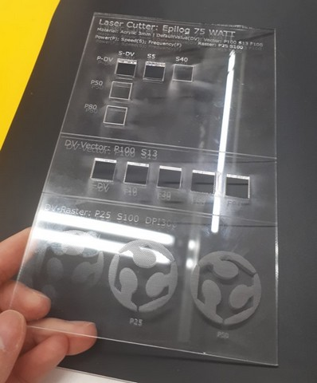
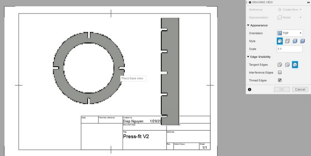
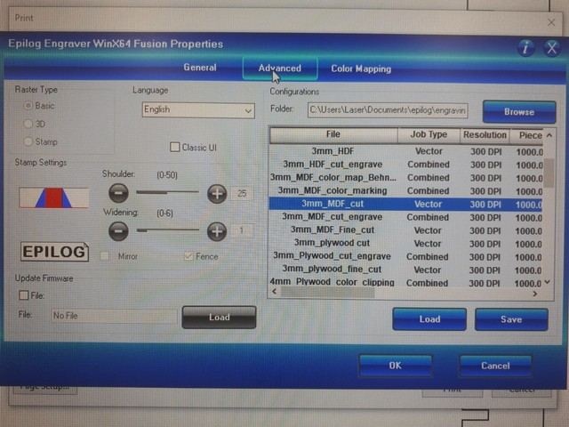

4. Computer controlled cutting¶
This week I worked on the processes involved in using vinyl cutter and laser cutter in Oulu Fablab.
Aims¶
- Cut anything with vinyl cutter (Individual)
- Characterize laser cutter (Group)
- Make a parametric press-fit construction kit with laser cutter and demonstrate the process (Individual)
Vinyl cutting¶
Preparing the design¶
I chose to use Inkscape for design preparation
- I firstly download my favorite image since I am not good at drawing https://www.vecteezy.com/vector-art/4988938-flying-beauty-pink-butterfly
- In the Inkscape, I go to Files > Import and choose the downloaded image
- Then I use trace bitmap in Inkscape because the vinyl cutter files must only contain vectors (and images we downloaded are mostly raster). So I will right click the image and select Trace bitmap, or go to tab Path > Trace bitmap, or Shift + Alt + B. In the pop-up window of Trace Bitmap, choose Edge detection, and it converts as below

- Next, I would need to draw a rectangle around the image as a frame. By doing this, it will be much easier for later peeling. Here I have problem when drawing a rectangle because it just showed the dot lines of the frame instead of the visible straight lines. So I tried to check the Fill and Stroke of the rectangle, and it should be flat color in stroke paint, and no color in Fill instead.

- Then I Ctrl A to choose all (a butterfly and a rectangle) and go to File > Document Properties > Resize page to drawing
- Next I need to configure the Fill and Stroke of the whole image (select all > click Object > Fill and Stroke) , I chose X (no color) for the Fill, Flat color for the Stroke paint, and 0.02mm width for the Stroke style
Then this picture is ready to print. But I prepared it at home, so I need to copy it in .svg format to memory stick and go to Fablab to print
Cutting with vinyl cutter¶
At the University of Oulu, we use Roland CAMM-1 GS24 vinyl cutter.
- Loading lever: we push it to the back to load the sheet and adjust the rollers, and pull it to the front to fix the position to cut. Remember that the lever should be in the front position (we can view as locked) when cutting.
- White strips are places where we should place the rollers.
- There are 2 rollers which play as positioning the width of the sheet.
- Cutting carriage: there is a very small blade installed here. The cutting will move from left to right to cut.
- Operation Panel (on the right of the machine): there are 3 selections available for material a) roll:the machine will measure the distance between the rollers and is mostly used for the rolling cutting sheet b) piece: the machine will measure length and width of the sheet and c) edge: the machine will measure the distance between the rollers and moves the blade to the left edge of the sheet.
- For setting the vinyl cutter for my image, I chose Edge
- Then I loaded the sheet under the rollers
- Back to the computer, I opened my image in Inskcape, and moved my image to CutStudio by choosing Extention tab > Roland CutStudio > Open in CutStudio.
- In CutStudio, I pressed Ctr P to print (remember to choose the correct cutting machine)
- Back to the Operation Panel, I pressed Enter to start cutting. Actually, we can choose to print/cut directly from the Inkscape, but as my experience, the CutStudio makes it more convenient.
- Since the image I chose has so many small details, the machine somehow peeled it while cutting.

- I would better choose another good example to demonstrate the vinyl cutting later, now I just sticked with it and try to peel it (I used a tweezer to help me). You can see some details in my cutting have to be sacrified.

- After removing the unwanted parts, I used a piece of paper adhesive sheet to help moving my sticker to the desired place

- I sticked it on my laptop
Apparently, we should consider the details of our image when vinyl cutting. So this time, I chose another better one, and repeated the above steps

Characterizing laser cutter¶
For understanding the nature and features of the laser cutter, as a group of four (Kecheng Zhang, Antti R, Antti Pantti and me), we worked mostly with Epilog Fusion M2 40 Laser 75 Watt which is larger than the other mini laser cutter.
With the machine¶
-
Turn on: there are 3 steps to turn on the machine
-
Start cutting: assume that we have a design and already send to the machine, then we need adjust 3 things on the Joystick Control
○ JOG: (or the Origin) is where we set up the place/point where the machine begins to laser. By looking at the Red dot pointer and using the joystick to move it to the desired position ○ FOCUS: is where we decide the distance between the laser and the material we neet to cut. Normally, we have a special focusing tool (triangle shape) to support the adjustment. By installing the tool to the 2 knobs of the laser, and moving (up or down) the joystick until the tool touches the material, take out the tool after setting. ○ JOB: is where we choose the file we need to implement -
Remember that after each adjustment, we need to press the joystick so that the system can save our setting.
-
After the 3 setting, the screen will display the amount of time spending for the job.
-
Click GO to start cutting/engraving
Important safety instructions:¶
Since the laser cutter is the most dangerous machine in any Fablab, so we should:
○ NEVER Turn our back to the machine when it is cutting
○ Wait at least 1 minute after the machine finishes the cutting, and open the lid.
Because the combution of some cutting materials may catch fire when exposing with air, so we need to wait for the exhaust pull away the gases
○ In case there is fire, (1) cover the place with the 'fire blanket' (near the sink in the Fablab), (2) bring the material out of the machine, (3) use the fire extinguisher.
Kerf¶
What is kerf:¶
It is the width of material which is burned away. That means the size of what we design to cut and of what we cut in reality will slightly mismatch. This happens because of many factors such as the laser beam has its own size, the nature of the materials, the environments, the settings, the process… It is important to take into consideration the kerf when designing, especially in parametric design. The picture from our instructor (Ms. Behnaz) is a good demonstration to understand.
Measuring kerf¶
- To make it clearer, we prepared to cut the big rectangle with the length of 100 mm which has 10 small 10mm-rectangles inside.
- The file was saved in pdf format before sending to the laser cutter.
- The material we used to cut is MDF 3mm and Acryclic 3mm.
- Then we measured the size of the big one and the small onces after cutting to see the difference. To make it easy to calculate, we also used 2-side taps to help position the material on paper, and made use of the digital calculator.

-
After cutting: Interestingly, both the MDF and the Acrylic demonstrated clearly the kerf.
-
With MDF material:
□ The designed size for the big rectangle we wanted to cut is 100 mm, but the real size is 100.03 mm.

□ Similarly, 10 small rectangles were set to be 10 mm each (which accounted for 100 mm whole), but the value after cutting for 10 small rectangles together is 98.70 mm.

□ Here we can see the gap, and the Kerf we calculated is 0.13 mm.
-
With Acrylic material: we observed that actual size of the 10 small rectangles are 98.98mm. As such the Kerf is 0.102mm for this case.

-
Power - Speed - Frequency - DPI¶
For checking out the effect of Power, Speed, Frequency, DPI on the cutting/engraving quality, we used MDF 3mm and Acrylic 3mm to demonstrate this.
With the MDF 3mm:
- Firstly, we keep the Frequency constant, and adjust the Power and Speed.
| Power | Speed | Freg | Observation |
|---|---|---|---|
| 100 | 15 | 20 | Cut thru |
| 100 | 5 |
20 | Cut thru but very slow |
| 100 | 40 |
20 | Not cut thru due to fast speed |
50 |
15 | 20 | Not cut thru due to too low evergy |
80 |
15 | 20 | Cut thru |

We observed that with slow speed, the machine works well in cutting through the material, while being set to run in fast speed, the MDF is hardly to cut. Additionally, with low power (50) MDF 3mm cannot be cut but we can make use of this figure to engrave, for example. Interestingly, with just 80% power, the square can be cut easily, which is a good consideration for power saving.
- Next, we adjusted the frequency and keep the power (100) and speed (15) constant to see what would happen. The frequency was changed from 20, 5, 40, 60, 80 but there were not so many differences we could observe, because all were well-cut.
- To check the engraving quality, we kept the Speed (50) and DPI (300) unchanged while adjusted the Power (from 20, 50, and 100). It is also important to note that the color of all 3 pictures should be the same or else it will not describe correctly the effect. It can be clearly seen that with less power, the engraved parts are lighter than those of strong power.

With the Acrylic 3mm: we changed the default value since the material is different compared to the MDF 3mm. However the result is quite similar to what demonstrated with MDF 3mm

For checking the Focus, we set up the rastering as in focused, 2mm above the focused, 2mm below the focused, 4mm above the focused, and 4mm below the focused. The result has shown that it was a big different between the below/above focus and the in-focused (as we can see the engraved color in the in-focused is much darker). However, among those below and above focus, the engraving color look quite similar.
Making with laser cutter¶
In this assignment, I have to design and make a press-fit construction kit by my own. Most importantly, it should be parametric design without using Inkscape. So that means I have to consider using 3D design software which is quite challenging for me as a newbie within a week. However, I decided to use Autodesk Fusion 360 since I already asked for the student account installation. Anyway, with the support of my instructors and peers, I did it and can finally create a nice thing.
Sketch a design¶
I firstly drew on paper what I wanted to make, and it is a pen holder. It will have 4 pillars (in rectangle-shape) to hold 4 disks (in circular-shape) with inside empty and 1 disk as a base.

Design on Fusion 360¶
- I click on Create sketch and choose a surface I want to draw. It was a TOP
-
In the Create, I choose a circle shape. It will then appear a small window of Sketch palette on the right hand, and I choose Center diameter circle to draw a circle from the central point.

-
I input the diameter of the circle as 100mm.
-
Then I draw another smaller circle inside with 70mm in diameter.
-
In the Create, I choose to draw Rectangle (2-point rectangle) inside the big circle. This will be made as a joint in a press-fit construction later. I temporarily set the height as 8mm and width as 3mm.

-
I need to define my own parameter so that it will be more convenient if later I want to change some dimensions which related to each other, they will be changed accordingly.
- I go to Modify, select Change Parameters, click + and define parameter in my own words.
- I especially choose the Material_thickness as 3mm because I plan to cut in the MDF 3mm.
- For the Kerf, I define it as 0.1mm because as we test above, the kerf for cutting joint slot with MDF 3mm is around 0.13mm. We can change it later if after cutting it does not fit.
- I also define the slot_width=Material_thickness-Kerf.

-
After clicking OK to set the parameters, I go back to the sketch and change the name of the dimensions. By double click on the dimensions, for example the 8mm of the slot, I will type slot_height. I do the same for the other dimensions (big_cirle, small_circle, slot_width)

-
Next, to make a slot, I need to Trim or remove (click on the scissor shape) the unnecessary parts of the rectangle.

-
I need to make the slot height constrainted to make sure they will always fix and position. So in the tab Constraint, I choose the icon of equal (=), and click the 2 sides of the slot.

-
Now I have 2 circles and a slot with constraint. It is nearly similar to my sketch, except I need 3 more slots. So here the instructor advices me to use a tool called Circular Pattern in the Create tab. This function will allow us to duplicate the sketch in an arc or circular pattern

As a Circular pattern window pops up, I do step by step as the guideline. First, for the Object, I select the 3 sides of the slot. Second, for the Center Point, I select the big circle. Then, I select Full for the Angular Spacing because I want the slots go around the circle. Finally, I choose 4 for the Quantity
Now I have 4 slots on the big circle. But at the 3 new slots we need to trim the unwanted parts on the cirle to make it a slot.
Since I make constraint for the first slot, so other slots duplicated from that will also constraint. To check that, I go to Change parameters and change the slot height as 9mm. When I back to the sketch, the slot height of other slot is also changed to 9mm (click on the height, press D - as Measurement, and drag it to see)
-
Now I move on to draw another part (a pillar for the pen holder). I draw a rectangle with 25mm width and 150mm height
-
On this rectangle, I also need to have slots (5 in total). So the steps will be quite similar as making slots for the circle above. I first draw a small rectangle, but this time, I put the name of the parameter I define before to the dimensions instead of the number.

-
Then I do the Trim for the small rectangle to make a slot.
-
To duplicate the slot, I will use the same tip as above, but this time with Rectangular Pattern

In the rectangular pattern windown: For the Object, I select the 3 sides of the slot. Second, for the Direction, I select left side of the big rectangle. Then, I input 5 for the 1st Quantity because I want 5 slots. Then for the Distance, I am not quite sure, so I use the blue arrow appeared on the sketch and move it to the position I find comfortable. For the 2nd Quantity, it is the number of rectangles will be duplicated in the horizon direction, I don’t need more than 1, so I put it 1.

-
Now I have 5 rectangles on the pillar, just need to trim to make them slots. And finish the design

Export to PDF with Fusion 360¶
-
To export to PDF, I need to Extrude the sketch to 3D. I click on Finish Sketch, and select all (both the cirle and the rectangle pillar). Then I go to Create and choose Extrude. Here it will ask to input the thickness of my 3D, so I type 3 because the material I will use to cut is MDF 3mm.

-
In the Design tab, I choose Drawing > From Design, and it will pop up a Create Drawing window, in which I select the Sheet size as A4
-
In the Drawing view, I change the Orientation to the Top and the Scale to 1:1. Place the mouse to the drawing and OK.

-
To delete the outside frame and the title frame of the drawing, I go to Sheet setting and click on the eyes to make it invisible.
-
Now I will export to PDF and save it.

Prepare to print with Inkscape¶
In the Inkscape, I import the pdf file, and set up the Fill and Sroke of the objects (Fill: no paint, Stroke paint: Flat color, Stroke styles: 0.02 mm). It is not allowed to change the size in Inkscape because it will affect to the kerf and other dimensions. Then, I will save it again in PDF.

Set up with laser cutter¶
-
I open the newly saved PDF and press Ctrl P. In the Epilog Properties, Advanced tab, I select the parameter for the materials 3mm_MDF_cut and press OK to send the job to the laser cutter

-
Back to the laser cutter, I adjust the Jog, Focus, and Job. It was so satisfied to see my design is coming true.

After that, I test the joints connection and see they fix quite well. So I decide to make more by copying the images in Inkscape, and do again with the Fill and Strokes…

Additionally, I would need to have another circle as a base (without being empty inside), so I back to my sketch in Fusion 360, select the smaller circle and extrude it. Then I export it to PDF, adjust the Fill and Stroke in Inkscape, Save in PDF, and send to laser cutter to print.

Assemble the construction kit¶
Now I have all objects I need and it is time for assemblingggg


It can hold the pens or “assemble other ways” by connecting with other press-fit construction kits

{kind=link}
{kind=link}